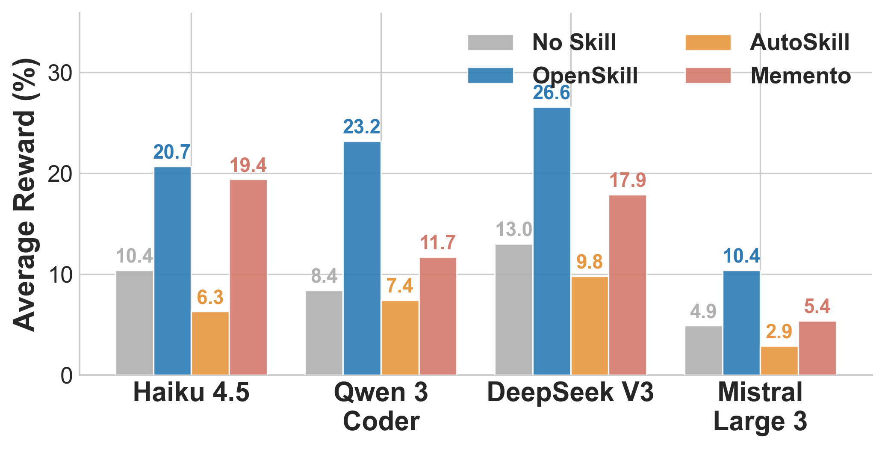
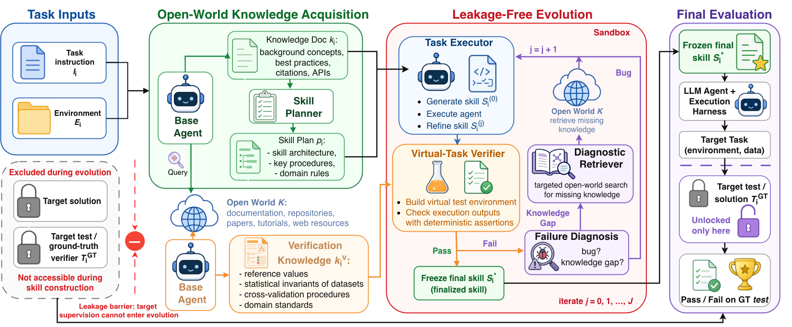
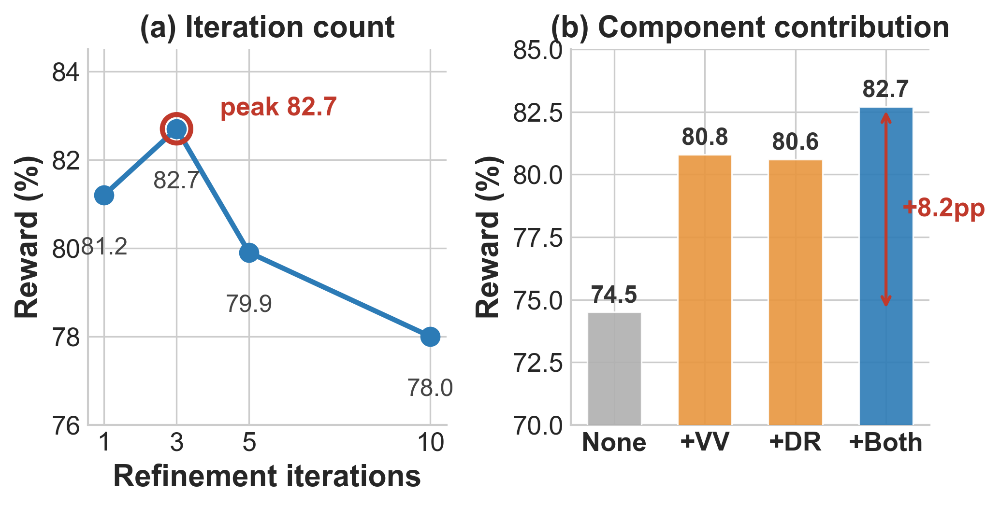

RQ1 — Transferability
OpenSkill-generated skills yield the highest reward across four weaker target models, improving by +5.5 to +14.8 points over no-skill with no model-specific adaptation.
An agent that builds both its skills and its own verification signals from scratch — using only a task prompt and open-world resources, with no target-task supervision.


Self-evolving agents require adaptation after deployment, but existing approaches assume a usable learning loop — curated skills, successful trajectories, or verifier signals. Real open-world deployments may provide none of these, offering only a task prompt. We study open-world self-evolution, where an agent must build both its skills and its own verification signals from scratch, using open-world resources but no target-task supervision. We propose OpenSkill, a framework that bootstraps this loop: it acquires grounded knowledge and verification anchors from documentation, repositories, and the web, synthesizes them into transferable skills, and refines those skills against self-built virtual tasks grounded in the anchors rather than in target answers. Across three benchmarks and two target agents, OpenSkill attains the best automated pass rate while satisfying the no-supervision constraint. Its skills transfer across models without model-specific adaptation, and its self-built verifier aligns with ground-truth outcomes despite never accessing them.
Skills are sourced from the open world, not bounded by a human's or model's prior knowledge.
Knowledge and verification anchors come from real documentation, repositories, and the web.
No gold answers, rewards, or verifier outputs during learning — a leakage barrier keeps them out.
Unlike human-curated, LLM-generated, or supervised self-evolution, OpenSkill acquires skills from the open world and verifies them with self-built virtual tasks — making it simultaneously scalable, grounded, and supervision-free.

Given only a task prompt, a base model, tool access, and open-world resources, OpenSkill bootstraps a learning loop from scratch in three stages.
Retrieves task-relevant knowledge and independent verification anchors from docs, repos, papers, and the web — then drafts a structured skill plan.
Drafts skills and refines them in a sandbox against self-built virtual tests grounded in the anchors, fixing bugs and knowledge gaps over up to three rounds.
Deploys the frozen skill to the target agent. Ground-truth tests are unlocked only here, at final evaluation — never during construction.

On SkillsBench (11 domains) OpenSkill beats the strongest closed-world baseline by +8.9 / +8.8 points and lands within 1–3 points of the human upper bound — while honoring the no-supervision constraint.
Best automated method per row in bold, second best underlined. The OpenSkill column is shaded; Human is a reference upper bound, excluded from ranking.
| Domain | No Skill | Self-Gen | CoT | Skill-Creator | AutoSkill | Memento | OpenSkill | Human |
|---|---|---|---|---|---|---|---|---|
| Opus 4.6 (Claude Code) | ||||||||
| Software | 32.6 | 37.9 | 34.9 | 51.3 | 36.0 | 34.4 | 59.9 | 38.8 |
| Office | 17.0 | 16.7 | 17.1 | 21.4 | 25.7 | 31.4 | 50.0 | 50.0 |
| Science | 25.6 | 31.3 | 30.0 | 36.2 | 33.3 | 35.0 | 35.0 | 46.7 |
| Media | 36.1 | 27.9 | 20.4 | 38.5 | 23.6 | 21.8 | 39.6 | 36.4 |
| Cybersecurity | 17.8 | 18.8 | 20.4 | 24.6 | 16.6 | 28.8 | 44.1 | 55.0 |
| Finance | 17.5 | 16.7 | 20.0 | 27.5 | 25.0 | 25.0 | 25.0 | 30.0 |
| Robotics | 27.6 | 13.3 | 16.0 | 36.0 | 4.0 | 32.0 | 36.0 | 36.0 |
| Energy | 41.2 | 11.1 | 40.0 | 60.0 | 33.3 | 60.0 | 60.0 | 66.7 |
| Manufacturing | 0.0 | 0.0 | 0.0 | 0.0 | 0.0 | 0.0 | 0.0 | 46.7 |
| Health | 24.8 | 19.8 | 19.2 | 31.2 | 14.5 | 25.0 | 69.6 | 80.0 |
| Math | 43.2 | 30.0 | 30.0 | 50.0 | 0.0 | 30.0 | 50.0 | 50.0 |
| Overall | 25.5 | 23.9 | 23.9 | 34.7 | 24.7 | 30.1 | 43.6 | 44.5 |
| Δ vs. No Skill | — | −1.6 | −1.6 | +9.2 | −0.8 | +4.6 | +18.1 | +19.0 |
| GPT 5.2 (Codex) | ||||||||
| Software | 33.2 | 48.4 | 47.2 | 44.4 | 16.7 | 19.5 | 49.1 | 42.5 |
| Office | 32.9 | 31.0 | 26.2 | 26.2 | 9.4 | 14.3 | 44.3 | 48.6 |
| Science | 30.4 | 30.3 | 29.8 | 21.9 | 5.5 | 13.8 | 48.6 | 48.3 |
| Media | 31.3 | 31.0 | 31.8 | 30.9 | 15.2 | 18.2 | 30.4 | 58.2 |
| Cybersecurity | 25.0 | 20.8 | 34.7 | 36.8 | 4.1 | 12.5 | 52.5 | 42.5 |
| Finance | 0.0 | 29.2 | 25.0 | 20.8 | 8.4 | 12.5 | 25.0 | 27.5 |
| Robotics | 16.0 | 26.7 | 40.0 | 20.0 | 13.4 | 26.6 | 40.0 | 40.0 |
| Energy | 0.0 | 33.3 | 55.6 | 22.2 | 11.0 | 22.3 | 80.0 | 53.3 |
| Manufacturing | 0.0 | 11.1 | 0.0 | 0.0 | 0.0 | 0.0 | 0.0 | 0.0 |
| Math | 30.0 | 33.3 | 33.3 | 50.0 | 33.5 | 0.0 | 50.0 | 40.0 |
| Health | 29.2 | 30.2 | 30.2 | 24.3 | 20.0 | 16.5 | 27.9 | 90.0 |
| Overall | 25.0 | 32.2 | 33.3 | 29.2 | 11.2 | 15.6 | 42.1 | 44.8 |
| Δ vs. No Skill | — | +7.2 | +8.3 | +4.2 | −13.8 | −9.4 | +17.1 | +19.8 |
Beyond SkillsBench, OpenSkill is also the best automated method on SocialMaze (82.7% / 70.7%) and ScienceWorld (90.0% / 85.3%) across both target agents.
The same skill files produced by Opus 4.6 transfer as-is to weaker models. The virtual verifier covers most hidden test intents without seeing ground-truth tests, and the refinement loop peaks at a few iterations.

OpenSkill-generated skills yield the highest reward across four weaker target models, improving by +5.5 to +14.8 points over no-skill with no model-specific adaptation.

On SocialMaze, reward peaks at three refinement rounds. Open-world query and the virtual verifier each improve over a parametric-only baseline and are largely complementary.
Without access to ground-truth tests, the virtual verifier still provides a meaningful proxy signal for skill refinement. It aligns with GT outcomes and covers most human-authored test intents.
The remaining gaps mainly come from benchmark-specific anti-cheat checks and deeper semantic-quality tests that require domain expertise beyond the task specification.
| GT reward > 0 | GT reward = 0 | |
|---|---|---|
| Proxy pass | 39.29% | 29.76% |
| Proxy fail | 9.52% | 21.43% |